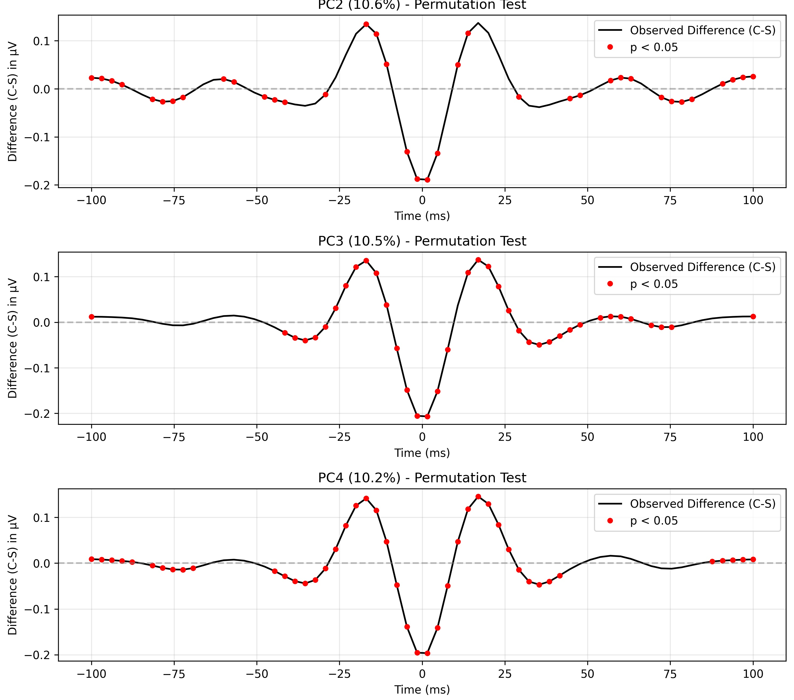
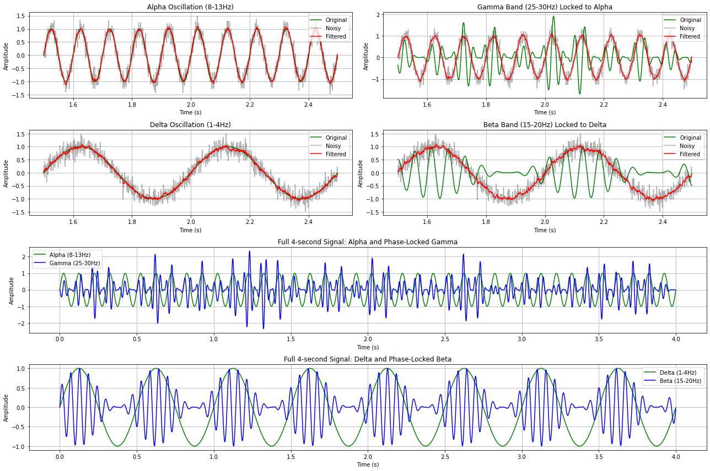
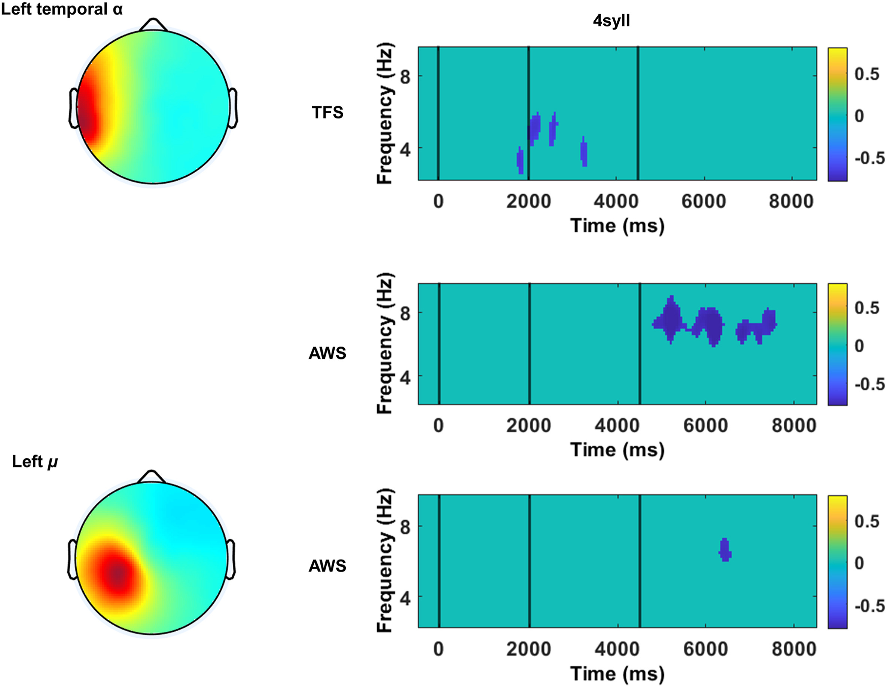
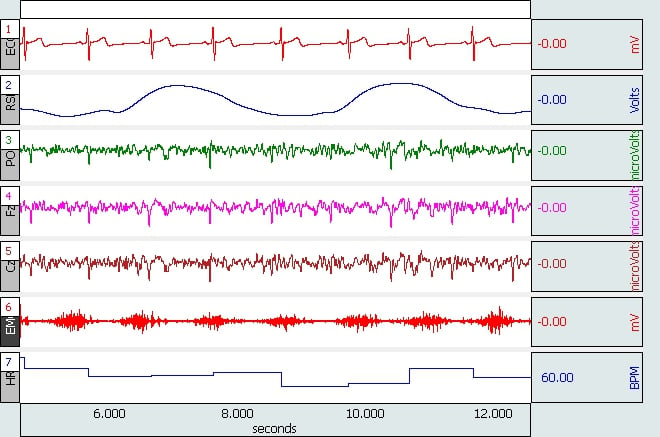

  <style>
    .why-matters-heading {
      font-size: 1.5rem;
      font-family: var(--font-serif);
      font-weight: 700;
      color: var(--primary-color);
      margin-left: 1.5rem;
      margin-top: 1.2rem;
      margin-bottom: 0.7rem;
      border-bottom: none;
      padding-bottom: 0;
      display: block;
    }
    .project-section h3,
    .research-item h3 {
      font-size: 1.5rem;
      font-family: var(--font-serif);
      font-weight: 700;
      color: var(--primary-color);
      margin-left: 0;
      margin-top: 1.2rem;
      margin-bottom: 0.7rem;
      border-bottom: none;
      padding-bottom: 0;
      display: block;
    }
    .project-img-left {
      float: left;
      width: 400px;
      height: 280px;
      max-width: 76vw;
      max-height: 280px;
      margin: 0 1.1rem 0.7rem 0;
      border-radius: 6px;
      box-shadow: 0 1px 4px rgba(0,0,0,0.07);
      object-fit: cover !important;
      background: none;
      cursor: pointer;
      transition: box-shadow 0.2s;
      display: block;
      padding: 0;
    }
    .project-img-left:hover {
      box-shadow: 0 4px 16px rgba(44,62,80,0.18);
    }
    .project-img-right {
      float: right;
      width: 400px;
      height: 280px;
      max-width: 76vw;
      max-height: 280px;
      margin: 0 0 0.7rem 1.1rem;
      border-radius: 6px;
      box-shadow: 0 1px 4px rgba(0,0,0,0.07);
      object-fit: cover !important;
      background: none;
      cursor: pointer;
      transition: box-shadow 0.2s;
      display: block;
      padding: 0;
    }
    .project-section p {
      overflow: hidden;
      min-height: 0;
    }
    .project-section::after {
      content: "";
      display: table;
      clear: both;
    }
    .modal {
      display: none;
      position: fixed;
      z-index: 9999;
      left: 0; top: 0; width: 100vw; height: 100vh;
      background: rgba(0,0,0,0.8);
      align-items: center; justify-content: center;
    }
    .modal.open { display: flex; }
    .modal-content {
      max-width: 90vw; max-height: 90vh;
      border-radius: 8px;
      box-shadow: 0 8px 32px rgba(0,0,0,0.25);
      background: #fff;
      display: block;
      margin: auto;
    }
    .close {
      position: absolute; top: 30px; right: 50px; color: #fff; font-size: 2rem; cursor: pointer;
      z-index: 10000;
    }
    @media (max-width: 600px) {
      .project-img-left { float: none; display: block; margin: 0 auto 1rem auto; width: 90vw; max-width: 98vw; height: auto; }
      .project-img-right { float: none; display: block; margin: 0 auto 1rem auto; width: 90vw; max-width: 98vw; height: auto; }
    }
  </style>

<main>
  <section>
    <div class="container">
      <h2>Research Projects</h2>
      <p>
        <!-- Beta Burst Project Section -->
        <div class="research-item beta-burst" id="beta-burst">
<a href="burst_waveform.jpg" target="_blank">
  
</a>
          <h3>Beta burst dynamics in speech motor control and stuttering</h3>
          <p>
            Beta bursts are brief increases in oscillatory power in the 15-30 Hz frequency band that occur in sensorimotor 
            cortex. These bursts have been associated with motor preparation, inhibition, and feedback processing and are characterized by wavelet like shapes shown in the Figure to the right(click to enlarge).
          </p>
          <p>
            We utilize  EEG recordings during various speech tasks to characterize the temporal dynamics 
            of beta bursts in people who stutter compared to fluent speakers. Preliminary findings on a dataset collected at the University of Tennessee Health Science Center suggest altered 
            beta burst patterns may contribute to the timing disruptions observed in fluent and stuttered speech. The examples below show animations representing EEG analysis during two speech production tasks first described in Brown et al., (2025) to characterize the temporal dynamics of beta activity.

            The first animation shows a traditional beta band measure derived from what are called event-related perturbations (ERSPs) in which beta power is determined by comparison to a silent baseline. The second shows a different characterization of beta in which the rate of individual burst-like events is computed relative to the baseline. The animation shows that individual bursts can both increase and decrease relative to the baseline, suggesting more than one kind of beta burst. What we are currently examining is whether differences in the waveform shapes are associated with different burst rates, group differences, and relationships to behavioral variables like stuttered trials and OASES scores. Beta bursts could also be useful for an understanding of working memory in stuttering. Some work has shown they are closely related to behavioral measures of working memory (see phonological working memory project below)
          </p>
          
          <!-- EEG Visualization Section -->
<div class="eeg-visualization-container" style="margin: 2.5rem 0; padding: 1.5rem; background-color: #f8f9fa; border-radius: 8px; box-shadow: 0 2px 10px rgba(0,0,0,0.05);">
  <h4>Beta Power Dynamics: AWS vs. Controls</h4>
  <p class="visualization-description" style="font-style: italic; margin-bottom: 1.5rem; color: #555;">
    Time-frequency analysis of beta power during quiet and imagined speech conditions in adults who stutter (AWS) vs. fluent controls (CON). Both groups show a decrease in beta power, with AWS showing a larger magnitude change.
  </p>
  <div class="eeg-grid" style="display: grid; grid-template-columns: 80px repeat(2, 1fr); grid-template-rows: 40px auto; gap: 20px;">
    <!-- Column Headers -->
    <div style="grid-row: 1; grid-column: 2; text-align: center; font-weight: 600; font-size: 18px;">Quiet</div>
    <div style="grid-row: 1; grid-column: 3; text-align: center; font-weight: 600; font-size: 18px;">IM</div>
    
    <!-- Beta Row -->
    <div style="grid-row: 2; grid-column: 1; display: flex; align-items: center; justify-content: center; font-size: 20px; font-weight: bold;">β Power</div>
    <div class="chart-container quiet-beta-container" style="grid-row: 2; grid-column: 2; position: relative; height: 200px; background-color: white; border: 1px solid #ddd; border-radius: 5px; overflow: hidden;"></div>
    <div class="chart-container im-beta-container" style="grid-row: 2; grid-column: 3; position: relative; height: 200px; background-color: white; border: 1px solid #ddd; border-radius: 5px; overflow: hidden;"></div>
  </div>
  
  <div class="legend" style="display: flex; justify-content: center; gap: 30px; margin: 20px 0;">
    <div class="legend-item aws" style="display: flex; align-items: center; gap: 8px; font-weight: 500;">
      <span style="width: 20px; height: 3px; background-color: #e63946; box-shadow: 0 -4px 0 rgba(230,57,70,0.2), 0 4px 0 rgba(230,57,70,0.2);"></span>
      <span>AWS</span>
    </div>
    <div class="legend-item con" style="display: flex; align-items: center; gap: 8px; font-weight: 500;">
      <span style="width: 20px; height: 3px; background-color: #1d3557; box-shadow: 0 -4px 0 rgba(29,53,87,0.2), 0 4px 0 rgba(29,53,87,0.2);"></span>
      <span>CON</span>
    </div>
  </div>
  
  <button id="animate-beta-power-button" class="btn" onclick="this.disabled=true; animateBetaPowerVisualization(); setTimeout(() => this.disabled=false, 8000); return false;" style="display: block; margin: 0 auto; padding: 12px 30px; background-color: var(--primary-color); color: white; border: none; border-radius: 4px; font-size: 18px; cursor: pointer; position: relative; z-index: 9999; box-shadow: 0 4px 8px rgba(0,0,0,0.1);">Animate Beta Power</button>
</div>

  
<!-- Beta Burst Rate Analysis Section -->
<div class="burst-visualization-container" style="margin: 2.5rem 0; padding: 1.5rem; background-color: #f8f9fa; border-radius: 8px; box-shadow: 0 2px 10px rgba(0,0,0,0.05);">
  <h4>Beta Burst Rate Analysis: Individual Variability</h4>
  <p class="visualization-description" style="font-style: italic; margin-bottom: 1.5rem; color: #555;">
    Change in beta burst rate (% from baseline) showing both mean trends and individual burst variations. Unlike power analysis, burst rate analysis reveals greater variability with some bursts increasing while others decrease around the mean.
  </p>
  
  <div class="burst-grid" style="display: grid; grid-template-columns: 80px repeat(2, 1fr); grid-template-rows: 40px auto; gap: 20px;">
    <!-- Column Headers -->
    <div style="grid-row: 1; grid-column: 2; text-align: center; font-weight: 600; font-size: 18px;">Quiet</div>
    <div style="grid-row: 1; grid-column: 3; text-align: center; font-weight: 600; font-size: 18px;">IM</div>
    
    <!-- Burst Row -->
    <div style="grid-row: 2; grid-column: 1; display: flex; align-items: center; justify-content: center; font-size: 20px; font-weight: bold;">β Burst Rate</div>
    <div class="chart-container quiet-burst-container" style="grid-row: 2; grid-column: 2; position: relative; height: 200px; background-color: white; border: 1px solid #ddd; border-radius: 5px; overflow: hidden;"></div>
    <div class="chart-container im-burst-container" style="grid-row: 2; grid-column: 3; position: relative; height: 200px; background-color: white; border: 1px solid #ddd; border-radius: 5px; overflow: hidden;"></div>
  </div>
  
  <div class="legend" style="display: flex; justify-content: center; gap: 30px; margin: 20px 0;">
    <div class="legend-item aws" style="display: flex; align-items: center; gap: 8px; font-weight: 500;">
      <span style="width: 12px; height: 12px; background-color: #e63946; border-radius: 50%;"></span>
      <span>AWS</span>
    </div>
    <div class="legend-item con" style="display: flex; align-items: center; gap: 8px; font-weight: 500;">
      <span style="width: 12px; height: 12px; background-color: #1d3557; border-radius: 50%;"></span>
      <span>CON</span>
    </div>
  </div>
  
  
  <button id="animate-burst-rate-button" class="btn" onclick="this.disabled=true; animateBurstVisualization(); setTimeout(() => this.disabled=false, 8000); return false;" style="display: block; margin: 0 auto; padding: 12px 30px; background-color: var(--primary-color); color: white; border: none; border-radius: 4px; font-size: 18px; cursor: pointer; position: relative; z-index: 9999; box-shadow: 0 4px 8px rgba(0,0,0,0.1);">Animate Burst Rate</button>
</div>

<h4 class="why-matters-heading">Why this matters:</h4>
<div style="margin-left: 1.5rem; margin-bottom: 1.5rem;">
  If we want to develop neurofeedback or alternating current stimulation protocols to enhance intervention, we need to identify functional relationships and critical features of the EEG that serve as reliable biomarkers. It is possible that different waveforms may for example have an inhibitory function for speech motor control while others represent a release from inhibition. Still others may be related to what a listener percieves as stuttering or some may be related to processes like the aniticipation of stuttering.
</div>
</p>
</p>
</p>
</p>
</p>
        <!-- Event-related phase amplitude coupling -->
        <div class="Phase-amplitude couplint" id="ERPAC" style="margin-top: 3rem;">
          <h3>Event-related phase amplitude coupling in stuttering and speech motor control</h3>
<a href="alpha_gamma_delta_beta.png" target="_blank">
  
</a>
          <p>
            This project explores how transient links between the phase of lower frequency alpha rhythms (e.g., ~8-13Hz) and higher frequency beta power (~15-30Hz) might differ in adults who stutter compared to typically fluent speakers. While beta bursts are related to inhibition and disinhibition, measures of alpha-beta phase amplitude coupling are thought to index sensorimotor precision. The goal of this project is to determine whether measures of alpha-beta phase amplitude coupling relate to the ongoing phases of a speaking task from speech preparation to execution. A second goal of the project is to determine whether the measure relates to stuttering behaviors (stuttered trials) and self-reported measures of functional impact (OASES scores). A final goal of the project is to identify at what alpha phase differences in alpha-beta phase amplitude coupling occur.
            <br><br>
            The figure (click to enlarge) shows a simulation of a rhythmic (i.e., periodic) lower frequency beta oscillation locked to the phase of a delta oscillation (~1-3Hz) in addition to an aperiodic (i.e., not so rhythmic) higher frequency beta signal (sometimes called "gamma") locked to ongoing alpha phase. The figure highlights how both rhythmic and nonrhythmic processes may be nested and contribute to speech motor control and stuttering. One possibility is that the excitatory/inhibitory balance represented by aperiodic upper frequency beta signals is modulated in a systematic and timely way by lower frequency alpha phase. This is important because alpha phase may serve as a target for the regulation of upper beta power during speech production, known to be related to the successful ihbition and initiation of speech and other movements. 
          </p>

<h4 class="why-matters-heading">Why this matters:</h4>
<div style="margin-left: 1.5rem; margin-bottom: 1.5rem;">
  One way to modify beta power and speech motor behavior is to stimulate alpha rhythms at the right phase. To be able to do that, we need to know how alpha is modulating beta and at what phase it's modulating beta. As shown in the figure, we can decide to stimulate at troughs (when the wave travels downward) or at peaks of the alpha cycle (when it is traveling upward). When we know that, we may be able to target changes in both behavior and beta power by using an electrical stimulation approach called alternating current stimulation that allows us to target specific frequencies of various rhythms.
</div>
<div class="project-meta" style="display: flex; justify-content: space-between; margin-top: 1.5rem;">
</div>

        <!-- New Project: Phonological working memory in stuttering -->
        <div class="project-section" id="phonological-working-memory" style="margin-top: 3rem;">
          <h3>Phonological working memory in stuttering</h3>
          <div style="overflow: hidden;">
<a href="phono_mem.jpg" target="_blank">
  
</a>
            <p style="overflow:visible;">
              Phonological working memory refers to the ability to temporarily store and manipulate speech sounds, which is one process that could be related to stuttering. For example, children who are considered to recover from stuttering tend to have slightly better performance on measures of phonological working memory compared to children who persist. Adults who stutter also seem to present with differences in tasks heavily loading phonological working memory. Still, findings have been mixed and it's unclear what process might underlie lower behavioral performance, how differences are related to speech/language production, and how differences might be related to stuttering in any functional way. We've proposed that differences in the sensorimotor control system as part of a larger neurobiology of language could be related to these differences (see Bowers et al., 2018) and we've also found some correlates that are consistent with multiple cortical rhythms derived from EEG recordings (see Bowers et al., 2024). We've proposed that short-term memory for nonword sequences may load speech sensorimotor motor and auditory-sensory processes that also lead to stuttering behaviors in more naturalistic speech production. So, we've suggested that some nonword tasks may act as a kind of stress test. What we still don't know is how it all fits together. Brain rhythms, even when they can be isolated from other rhythms, seem to multiplex and different frequencies have different functional roles. The ongoing goal of this project is to investigate how both intrinsic (i.e., in the resting state) and task-related brain responses at multiple frequencies (e.g., theta, beta, and alpha) relate to measures of behavioral performance. The Figure (click to enlarge) shows strong negative correlations (the blue blobs) in both typcially fluent speakers (TFS) and AWS between syllable repetition performance power at the boundary between theta and alpha bands in sensorimotor and temporal lobe EEG components.
            </p>
          </div>
          <div style="margin-left: 1.5rem; margin-bottom: 1.5rem;">
            
          </div>
          <h4 class="why-matters-heading">Why this matters:</h4>
          <div style="margin-left: 1.5rem; margin-bottom: 1.5rem;">
            By clarifying the relationship between phonological working memory and stuttering, this research may lead to new assessment tools and a better understanding of underlying mechanisms. Burst-like mechanisms and links between bursts and lower frequency phase (see ERPAC project) may provide new insights into why AWS and CWS show subtle differences on tasks loading phonological working memory, how they relate to persistence or recovery from stuttering, and how they could be related to differences in speech/language production.
          </div>
        </div>

        <!-- New Project: Interoceptive Awareness of Stuttering -->
        <div class="project-section" id="interoceptive-awareness" style="margin-top: 3rem;">
          <h3>Developing a measure of interoceptive awareness of stuttering</h3>
          <div style="overflow: hidden;">
<a href="Sleep.jpeg" target="_blank">
  
</a>
            <p style="overflow:visible;">
              This project aims to create and validate a new measure for assessing interoceptive awareness in individuals who stutter. A new version of the biopsychosocial model of stuttering proposes that a primary feature of stuttering is a feeling of losing control or a feeling that you are not able to execute speech and language as intended.  Interoceptive awareness refers to the ability to perceive internal bodily sensations and monitor them to inform action. For that reason, the concept of interoceptive awareness adapted to stuttering could give us a measure of this internal process that wouldn't be obvious in counts of stuttering from an outside listener's perspective. The project will involve designing assessment tools, collecting data, and analyzing the relationship between interoceptive awareness and stuttering behaviors. The figure (click to enlarge) shows multiple physiological signals that could be related to a sensation of stuttering and could offer a way to learn how those signals contribute to an internal awareness of stuttering.
            </p>
          <h4 class="why-matters-heading">Why this matters:</h4>
          <div style="margin-left: 1.5rem; margin-bottom: 1.5rem;">
            A measure of interoceptive awareness in stuttering could offer new insights into how adults and children who stutter monitor internal signals and become aware of internal states. Access to a measure of awareness could also allow for a better understanding of how other physiological signals, including heart rate, muscle tension, and even differences in brain signals, are related to a sensation and awareness of stuttering. The figure above shows multiple physiological signals that have been related to stuttering in one way or another in previous studies. Knowledge about how awareness is related to these internal signals could ultimately help identify new intervention targets, improve self-monitoring strategies, and ultimately lead to more effective, individualized therapies for stuttering. Finally, a measure of awareness may also lead to a better understanding of how it arises and how intervention approaches could target what is likely to be a primary feature of stuttering. 
          </div>
        </div>
</div>
</div>

  <!-- Modal for full image view -->
<div id="imgModal" class="modal" onclick="closeModal(event)">
  <span class="close" onclick="closeModal(event)">&times;</span>
  
</div>


  <script>
// Define utility functions outside any other function scope
function createSVG(containerClass, svgId) {
  const container = document.querySelector('.' + containerClass);
  if (!container) {
    console.error('Container not found:', containerClass);
    return null;
  }
  
  // Clear any existing SVGs
  const existingSvg = document.getElementById(svgId);
  if (existingSvg) {
    existingSvg.remove();
  }
  
  const svg = document.createElementNS('http://www.w3.org/2000/svg', 'svg');
  svg.id = svgId;
  svg.setAttribute('class', 'chart');
  svg.setAttribute('viewBox', '0 0 400 150');
  svg.style.width = '100%';
  svg.style.height = '100%';
  svg.style.position = 'absolute';
  container.appendChild(svg);
  
  // Add basic labels
  const yAxis = document.createElement('div');
  yAxis.className = 'y-axis';
  yAxis.style.position = 'absolute';
  yAxis.style.left = '0';
  yAxis.style.top = '0';
  yAxis.style.height = '100%';
  yAxis.style.display = 'flex';
  yAxis.style.flexDirection = 'column';
  yAxis.style.justifyContent = 'space-between';
  yAxis.style.fontSize = '10px';
  yAxis.style.pointerEvents = 'none';
  
  const xAxis = document.createElement('div');
  xAxis.className = 'x-axis';
  xAxis.style.position = 'absolute';
  xAxis.style.bottom = '0';
  xAxis.style.left = '0';
  xAxis.style.width = '100%';
  xAxis.style.display = 'flex';
  xAxis.style.justifyContent = 'space-between';
  xAxis.style.fontSize = '10px';
  xAxis.style.pointerEvents = 'none';
  
  container.appendChild(yAxis);
  container.appendChild(xAxis);
  
  return svg;
}

function initializeChart(svgId, chartData) {
  if (!chartData || !chartData.aws || !chartData.aws.line || !chartData.con || !chartData.con.line) {
    console.error('Invalid chartData provided for', svgId);
    return;
  }
  
  const svg = document.getElementById(svgId);
  if (!svg) {
    console.error('SVG element not found:', svgId);
    return;
  }
  
  // Clear any existing content
  svg.innerHTML = '';
  
  // Add grid lines
  for (let i = 0; i < 4; i++) {
    const y = 30 + i * 30;
    const gridLine = document.createElementNS('http://www.w3.org/2000/svg', 'line');
    gridLine.setAttribute('x1', '0');
    gridLine.setAttribute('y1', y.toString());
    gridLine.setAttribute('x2', '400');
    gridLine.setAttribute('y2', y.toString());
    gridLine.setAttribute('stroke', '#ddd');
    gridLine.setAttribute('stroke-width', '1');
    gridLine.setAttribute('stroke-dasharray', '4 4');
    svg.appendChild(gridLine);
  }
  
  // Add vertical time markers
  const timeMarkerPositions = [125, 250, 375]; // -3500, -2000, 0 ms
  const timeMarkerLabels = ["-3500", "-2000", "0"];
  
  timeMarkerPositions.forEach((x, i) => {
    // Vertical line
    const timeLine = document.createElementNS('http://www.w3.org/2000/svg', 'line');
    timeLine.setAttribute('x1', x.toString());
    timeLine.setAttribute('y1', '20');
    timeLine.setAttribute('x2', x.toString());
    timeLine.setAttribute('y2', '130');
    timeLine.setAttribute('stroke', '#888');
    timeLine.setAttribute('stroke-width', '1');
    svg.appendChild(timeLine);
    
    // Text label
    const timeLabel = document.createElementNS('http://www.w3.org/2000/svg', 'text');
    timeLabel.setAttribute('x', x.toString());
    timeLabel.setAttribute('y', '140');
    timeLabel.setAttribute('fill', '#888');
    timeLabel.setAttribute('font-size', '10px');
    timeLabel.setAttribute('text-anchor', 'middle');
    timeLabel.textContent = timeMarkerLabels[i];
    svg.appendChild(timeLabel);
  });
  
  // Add AWS line (with increased stroke width for better visibility)
  const awsLine = document.createElementNS('http://www.w3.org/2000/svg', 'path');
  awsLine.setAttribute('d', chartData.aws.line);
  awsLine.setAttribute('stroke', '#e63946');
  awsLine.setAttribute('stroke-width', '3');
  awsLine.setAttribute('fill', 'none');
  awsLine.classList.add('aws-line');
  awsLine.style.strokeDasharray = '1000';
  awsLine.style.strokeDashoffset = '1000';
  svg.appendChild(awsLine);
  
  // Add CON line (with increased stroke width for better visibility)
  // FIXED: Added missing attributes and actually set the path data
  const conLine = document.createElementNS('http://www.w3.org/2000/svg', 'path');
  conLine.setAttribute('d', chartData.con.line);
  conLine.setAttribute('stroke', '#1d3557');
  conLine.setAttribute('stroke-width', '3');
  conLine.setAttribute('fill', 'none');
  conLine.classList.add('con-line');
  conLine.style.strokeDasharray = '1000';
  conLine.style.strokeDashoffset = '1000';
  svg.appendChild(conLine);
}

function animateAllLines() {
  console.log('Animating all lines...');
  const lines = document.querySelectorAll('.aws-line, .con-line');
  
  lines.forEach(line => {
    line.style.strokeDashoffset = '1000';
    void line.offsetWidth; // Force reflow
    line.style.transition = 'stroke-dashoffset 10s ease-in-out';
    line.style.strokeDashoffset = '0';
  });
}

// Data functions
function getBetaData() {
  return {
    quiet: {
      aws: {
        line: "M0,40 C10,38 20,39 40,42 C60,45 80,50 120,65 C140,70 160,72 180,70 C200,65 250,75 300,90 C320,95 350,92 400,75"
      },
      con: {
        line: "M0,45 C20,44 30,43 50,45 C70,47 90,50 120,55 C150,60 180,62 200,60 C220,58 250,62 280,70 C300,75 350,80 400,65"
      }
    },
    im: {
      aws: {
        line: "M0,40 C10,38 30,39 40,42 C60,45 80,50 120,65 C140,70 160,72 180,70 C200,68 220,80 260,92 C300,100 350,90 400,70"
      },
      con: {
        line: "M0,45 C20,44 30,43 50,45 C70,47 90,50 120,55 C150,60 180,62 200,60 C220,58 250,65 280,72 C310,78 350,75 400,60"
      }
    }
  };
}

function getAlphaData() {
  return {
    quiet: {
      aws: {
        line: "M0,45 C30,47 60,49 90,50 C120,52 150,56 180,62 C210,68 240,75 270,80 C300,82 330,78 400,65"
      },
      con: {
        line: "M0,48 C30,49 60,50 90,50 C120,50 150,52 180,54 C210,56 240,60 270,65 C300,67 330,65 400,55"
      }
    },
    im: {
      aws: {
        line: "M0,45 C30,47 60,49 90,50 C120,52 150,56 180,62 C210,70 240,85 270,95 C300,92 350,85 400,70"
      },
      con: {
        line: "M0,48 C30,49 60,50 90,50 C120,50 150,52 180,54 C210,56 240,62 270,70 C300,72 350,68 400,60"
      }
    }
  };
}

function getEMGData() {
  return {
    quiet: {
      aws: {
        line: "M0,140 C50,138 100,135 150,130 C200,125 250,120 290,115 C310,112 330,105 350,80 C370,55 385,35 400,25"
      },
      con: {
        line: "M0,138 C50,136 100,133 150,128 C200,122 250,118 290,110 C310,108 330,100 350,75 C370,50 385,32 400,22"
      }
    },
    im: {
      aws: {
        line: "M0,140 C50,138 100,134 150,128 C170,125 190,122 220,115 C240,110 260,105 280,95 C300,85 320,65 350,40 C370,25 385,20 400,15"
      },
      con: {
        line: "M0,138 C50,136 100,132 150,126 C170,122 190,118 220,112 C240,108 260,104 280,92 C300,82 320,62 350,38 C370,23 385,18 400,12"
      }
    }
  };
}

function initEEGVisualization() {
  console.log("Initializing EEG visualization...");
  
  // Create SVG elements for each container
  createSVG('quiet-beta-container', 'quiet-beta');
  createSVG('im-beta-container', 'im-beta');
  createSVG('quiet-alpha-container', 'quiet-alpha');
  createSVG('im-alpha-container', 'im-alpha');
  createSVG('quiet-emg-container', 'quiet-emg');
  createSVG('im-emg-container', 'im-emg');
  
  // Initialize all charts with data
  initializeChart('quiet-beta', getBetaData().quiet);
  initializeChart('im-beta', getBetaData().im);
  initializeChart('quiet-alpha', getAlphaData().quiet);
  initializeChart('im-alpha', getAlphaData().im);
  initializeChart('quiet-emg', getEMGData().quiet);
  initializeChart('im-emg', getEMGData().im);
  
  // Initial animation after a delay
  setTimeout(animateAllLines, 1000);
}

window.animateChartsDirectly = function() {
  console.log('Animation triggered directly');
  
  // Create and initialize SVGs if they don't exist
  if (!document.getElementById('quiet-beta')) {
    const quietSvg = createBetaPowerVisualization('quiet-beta-container', 'quiet-beta');
    if (quietSvg) {
      initializeBetaPowerVisualization('quiet-beta', getBetaPowerData().quiet);
    }
  }
  
  if (!document.getElementById('im-beta')) {
    const imSvg = createBetaPowerVisualization('im-beta-container', 'im-beta');
    if (imSvg) {
      initializeBetaPowerVisualization('im-beta', getBetaPowerData().im);
    }
  }
  
  // Animate lines
  const lines = document.querySelectorAll('.aws-line, .con-line');
  lines.forEach(line => {
    line.style.strokeDashoffset = '1000';
    void line.offsetWidth; // Force reflow
    line.style.transition = 'stroke-dashoffset 5s ease-in-out';
    line.style.strokeDashoffset = '0';
  });
  
  return false;
};

// Create and initialize the burst visualization with improved spacing - FIXED VERSION
function createBurstVisualization(containerClass, svgId) {
  const container = document.querySelector('.' + containerClass);
  if (!container) {
    console.error('Container not found:', containerClass);
    return null;
  }
  
  // Clear any existing SVGs
  const existingSvg = document.getElementById(svgId);
  if (existingSvg) {
    existingSvg.remove();
  }
  
  // Create SVG with increased height for labels and visual consistency
  const svg = document.createElementNS('http://www.w3.org/2000/svg', 'svg');
  svg.id = svgId;
  svg.setAttribute('class', 'burst-chart');
  svg.setAttribute('viewBox', '0 0 400 250'); // Match power animation height
  svg.style.width = '100%';
  svg.style.height = '100%';
  svg.style.position = 'absolute';
  container.appendChild(svg);
  
  // Define constants for better spacing
  const leftMargin = 40; // Space for y-axis labels
  const rightMargin = 10;
  const topMargin = 20;
  const bottomMargin = 30; // Space for time labels
  const chartWidth = 400 - leftMargin - rightMargin;
  const chartHeight = 180 - topMargin - bottomMargin;
  
  // Add horizontal grid lines and labels for percentages - FIXED SPACING
  const percentages = [50, 25, 0, -25, -50];
  const yPositions = [40, 80, 120, 160, 200]; // Fixed equal spacing
  
  for (let i = 0; i < percentages.length; i++) {
    // Grid line with proper left margin
    const gridLine = document.createElementNS('http://www.w3.org/2000/svg', 'line');
    gridLine.setAttribute('x1', leftMargin.toString());
    gridLine.setAttribute('y1', yPositions[i].toString());
    gridLine.setAttribute('x2', '390');
    gridLine.setAttribute('y2', yPositions[i].toString());
    gridLine.setAttribute('stroke', '#ddd');
    gridLine.setAttribute('stroke-width', '1');
    gridLine.setAttribute('stroke-dasharray', '4 4');
    svg.appendChild(gridLine);
    
    // Percentage label - positioned to the left of the chart area
    const label = document.createElementNS('http://www.w3.org/2000/svg', 'text');
    label.setAttribute('x', (leftMargin - 5).toString());
    label.setAttribute('y', (yPositions[i] + 5).toString());
    label.setAttribute('fill', '#666');
    label.setAttribute('font-size', '12px');
    label.setAttribute('text-anchor', 'end');
    label.textContent = percentages[i] + '%';
    svg.appendChild(label);
  }
  
  // Add vertical time markers - better positioned
  const timeMarkerPositions = [leftMargin + chartWidth * 0.25, leftMargin + chartWidth * 0.5, leftMargin + chartWidth * 0.75];
  const timeMarkerLabels = ["-3500", "-2000", "0"];
  
  // Add time labels for all positions
  timeMarkerPositions.forEach((x, i) => {
    const timeLabel = document.createElementNS('http://www.w3.org/2000/svg', 'text');
    timeLabel.setAttribute('x', x.toString());
    timeLabel.setAttribute('y', '210'); // Below time markers, within viewBox
    timeLabel.setAttribute('fill', '#666');
    timeLabel.setAttribute('font-size', '11px');
    timeLabel.setAttribute('text-anchor', 'middle');
    timeLabel.textContent = timeMarkerLabels[i];
    svg.appendChild(timeLabel);
  });

  // Now use the zero position
  const zeroPosition = timeMarkerPositions[timeMarkerPositions.length - 1];
  
  // Add vertical line ONLY for the zero point
  const timeLine = document.createElementNS('http://www.w3.org/2000/svg', 'line');
  timeLine.setAttribute('x1', zeroPosition.toString());
  timeLine.setAttribute('y1', topMargin.toString());
  timeLine.setAttribute('x2', zeroPosition.toString());
  timeLine.setAttribute('y2', (200 - bottomMargin).toString());
  timeLine.setAttribute('stroke', '#888');
  timeLine.setAttribute('stroke-width', '1');
  svg.appendChild(timeLine);

  // Add x and y axis labels
  const xAxisLabel = document.createElementNS('http://www.w3.org/2000/svg', 'text');
  xAxisLabel.setAttribute('x', '200'); // Center of chart
  xAxisLabel.setAttribute('y', '235'); // Move below time labels, matching power animation
  xAxisLabel.setAttribute('text-anchor', 'middle');
  xAxisLabel.setAttribute('font-size', '14px');
  xAxisLabel.setAttribute('fill', '#333');
  xAxisLabel.textContent = 'Time relative to speech onset (ms)';
  svg.appendChild(xAxisLabel);
  
  const yAxisLabel = document.createElementNS('http://www.w3.org/2000/svg', 'text');
  yAxisLabel.setAttribute('x', '100'); // Center of y-axis
  yAxisLabel.setAttribute('y', '15'); // Top of chart
  yAxisLabel.setAttribute('text-anchor', 'middle');
  yAxisLabel.setAttribute('font-size', '14px');
  yAxisLabel.setAttribute('fill', '#333');
  yAxisLabel.setAttribute('transform', 'rotate(-90, 100,120)'); // Rotate to vertical
  yAxisLabel.textContent = '% Change';
  svg.appendChild(yAxisLabel);
  
  return svg;
}

// Modified getBurstData function to respect the new margins
function getBurstData() {
  // Define the time points for the mean trend
  const leftMargin = 40;
  const chartWidth = 340;
  const baseX = leftMargin;
  const xStep = chartWidth / 8;
  
  const timePoints = [
    baseX, 
    baseX + xStep*1, 
    baseX + xStep*2, 
    baseX + xStep*3, 
    baseX + xStep*4, 
    baseX + xStep*5, 
    baseX + xStep*6, 
    baseX + xStep*7, 
    baseX + xStep*8
  ];
  
  // Define the mean values with proper x positioning to stay within margins
  const quietData = {
    aws: {
      meanPoints: [
        { x: timePoints[0], y: 120 },    // 0% (baseline)
        { x: timePoints[1], y: 125 },     // -5%
        { x: timePoints[2], y: 135 },    // -15%
        { x: timePoints[3], y: 150 },    // -30%
        { x: timePoints[4], y: 160 },    // -40%
        { x: timePoints[5], y: 170 },    // -50% (peak decrease)
        { x: timePoints[6], y: 165 },    // -45%
        { x: timePoints[7], y: 155 },    // -35%
        { x: timePoints[8], y: 145 }     // -25%
      ],
      individualPoints: []
    },
    con: {
      meanPoints: [
        { x: timePoints[0], y: 120 },    // 0% (baseline)
        { x: timePoints[1], y: 122 },     // -2%
        { x: timePoints[2], y: 125 },    // -5%
        { x: timePoints[3], y: 130 },    // -10%
        { x: timePoints[4], y: 135 },    // -15%
        { x: timePoints[5], y: 145 },    // -25% (peak decrease)
        { x: timePoints[6], y: 140 },    // -20%
        { x: timePoints[7], y: 135 },    // -15%
        { x: timePoints[8], y: 130 }     // -10%
      ],
      individualPoints: []
    }
  };
  
  // IM data with proper x positioning
  const imData = {
    aws: {
      meanPoints: [
        { x: timePoints[0], y: 120 },    // 0% (baseline)
        { x: timePoints[1], y: 127 },     // -7%
        { x: timePoints[2], y: 140 },    // -20%
        { x: timePoints[3], y: 155 },    // -35%
        { x: timePoints[4], y: 165 },    // -45%
        { x: timePoints[5], y: 170 },    // -50% (peak decrease)
        { x: timePoints[6], y: 165 },    // -45%
        { x: timePoints[7], y: 155 },    // -35%
        { x: timePoints[8], y: 145 }     // -25%
      ],
      individualPoints: []
    },
    con: {
      meanPoints: [
        { x: timePoints[0], y: 120 },    // 0% (baseline)
        { x: timePoints[1], y: 123 },     // -3%
        { x: timePoints[2], y: 128 },    // -8%
        { x: timePoints[3], y: 133 },    // -13%
        { x: timePoints[4], y: 140 },    // -20%
        { x: timePoints[5], y: 145 },    // -25% (peak decrease)
        { x: timePoints[6], y: 140 },    // -20%
        { x: timePoints[7], y: 135 },    // -15%
        { x: timePoints[8], y: 130 }     // -10%
      ],
      individualPoints: []
    }
  };
  
  // Generate individual points with boundary protection
  function generateIndividualPoints(meanPoints, count = 24, jitterFactor = 15) {
    let allIndividualPoints = [];
    
    meanPoints.forEach(meanPoint => {
      for (let i = 0; i < count; i++) {
        // Keep x-jitter moderate and ensure points don't go beyond margins
        const xJitter = (Math.random() * jitterFactor) - (jitterFactor / 2);
        const xPosition = Math.max(leftMargin + 5, Math.min(385, meanPoint.x + xJitter));
        
        // Handle y-jitter with extreme variability but constrain to chart area
        let yJitterRange;
        
        if (meanPoint.x >= timePoints[3] && meanPoint.x <= timePoints[6]) {
          // Middle section with higher variability
          yJitterRange = 80; // Slightly reduced but still high variability
          
          // Counter-trend points
          if (i < count * 0.3) {
            const yOffset = -1 * (Math.random() * 70 + 20); // Notice negative to move upward
            const yPosition = Math.max(30, Math.min(190, meanPoint.y + yOffset));
            allIndividualPoints.push({
              x: xPosition,
              y: yPosition,
              r: Math.random() * 2.5 + 1.5
            });
            continue;
          }
        } else {
          // Less jitter at beginning and end
          yJitterRange = 50;
        }
        
        const yJitter = (Math.random() * yJitterRange) - (yJitterRange / 2);
        const yPosition = Math.max(30, Math.min(190, meanPoint.y + yJitter));
        
        allIndividualPoints.push({
          x: xPosition,
          y: yPosition,
          r: Math.random() * 2 + 1.5 // Slightly reduced dot size
        });
      }
    });
    
    return allIndividualPoints;
  }
  
  function createPathFromPoints(points) {
    if (points.length === 0) return '';
    
    let path = `M${points[0].x},${points[0].y}`;
    
    for (let i = 1; i < points.length; i++) {
      const prevPoint = points[i-1];
      const currentPoint = points[i];
      const controlDist = (currentPoint.x - prevPoint.x) * 0.4;
      path += ` C${prevPoint.x + controlDist},${prevPoint.y} ${currentPoint.x - controlDist},${currentPoint.y} ${currentPoint.x},${currentPoint.y}`;
    }
    
    return path;
  }
  
  quietData.aws.individualPoints = generateIndividualPoints(quietData.aws.meanPoints, 24, 15);
  quietData.con.individualPoints = generateIndividualPoints(quietData.con.meanPoints, 24, 15);
  imData.aws.individualPoints = generateIndividualPoints(imData.aws.meanPoints, 24, 15);
  imData.con.individualPoints = generateIndividualPoints(imData.con.meanPoints, 24, 15);
  
  quietData.aws.line = createPathFromPoints(quietData.aws.meanPoints);
  quietData.con.line = createPathFromPoints(quietData.con.meanPoints);
  imData.aws.line = createPathFromPoints(imData.aws.meanPoints);
  imData.con.line = createPathFromPoints(imData.con.meanPoints);
  
  return {
    quiet: quietData,
    im: imData
  };
}

// Function to animate burst visualization elements
function animateBurstLines() {
  const meanLines = document.querySelectorAll('.aws-mean-line, .con-mean-line');
  meanLines.forEach(line => {
    line.style.strokeDashoffset = '1000';
    void line.offsetWidth; // Force reflow
    line.style.transition = 'stroke-dashoffset 10s ease-in-out';
    line.style.strokeDashoffset = '0';
  });
  
  // Animate mean points
  const meanPoints = document.querySelectorAll('.aws-mean-point, .con-mean-point');
  meanPoints.forEach(point => {
    point.style.opacity = '1';
    point.style.transition = `opacity 0.5s ease-in-out ${point.dataset.animationDelay}ms`;
  });
  
  // Animate individual points
  const individualPoints = document.querySelectorAll('.aws-individual-point, .con-individual-point');
  individualPoints.forEach(point => {
    point.style.opacity = '1';
    point.style.transition = `opacity 0.5s ease-in-out ${point.dataset.animationDelay}ms`;
  });
}

// Initialize the burst visualization
function initializeBurstVisualization(svgId, chartData) {
  const svg = document.getElementById(svgId);
  if (!svg) {
    console.error('SVG not found:', svgId);
    return;
  }
  
  // 1. Create and add the mean lines (invisible initially)
  const awsMeanLine = document.createElementNS('http://www.w3.org/2000/svg', 'path');
  awsMeanLine.setAttribute('d', chartData.aws.line);
  awsMeanLine.setAttribute('stroke', '#e63946');
  awsMeanLine.setAttribute('stroke-width', '2');
  awsMeanLine.setAttribute('fill', 'none');
  awsMeanLine.classList.add('aws-mean-line');
  awsMeanLine.style.strokeDasharray = '1000';
  awsMeanLine.style.strokeDashoffset = '1000';
  svg.appendChild(awsMeanLine);
  
  const conMeanLine = document.createElementNS('http://www.w3.org/2000/svg', 'path');
  conMeanLine.setAttribute('d', chartData.con.line);
  conMeanLine.setAttribute('stroke', '#1d3557');
  conMeanLine.setAttribute('stroke-width', '2');
  conMeanLine.setAttribute('fill', 'none');
  conMeanLine.classList.add('con-mean-line');
  conMeanLine.style.strokeDasharray = '1000';
  conMeanLine.style.strokeDashoffset = '1000';
  svg.appendChild(conMeanLine);
  
  // 2. Create and add the mean points (larger circles along the mean line)
  // AWS mean points
  chartData.aws.meanPoints.forEach((point, index) => {
    const circle = document.createElementNS('http://www.w3.org/2000/svg', 'circle');
    circle.setAttribute('cx', point.x.toString());
    circle.setAttribute('cy', point.y.toString());
    circle.setAttribute('r', '4'); // Larger circles for mean points
    circle.setAttribute('fill', '#e63946');
    circle.setAttribute('stroke', 'white');
    circle.setAttribute('stroke-width', '1');
    circle.classList.add('aws-mean-point');
    circle.style.opacity = '0'; // Start invisible
    circle.dataset.animationDelay = (index * 300).toString(); // Stagger appearance
    svg.appendChild(circle);
  });
  
  // CON mean points
  chartData.con.meanPoints.forEach((point, index) => {
    const circle = document.createElementNS('http://www.w3.org/2000/svg', 'circle');
    circle.setAttribute('cx', point.x.toString());
    circle.setAttribute('cy', point.y.toString());
    circle.setAttribute('r', '4');
    circle.setAttribute('fill', '#1d3557');
    circle.setAttribute('stroke', 'white');
    circle.setAttribute('stroke-width', '1');
    circle.classList.add('con-mean-point');
    circle.style.opacity = '0';
    circle.dataset.animationDelay = (index * 300).toString();
    svg.appendChild(circle);
  });
  
  // 3. Create and add the individual points (smaller jittered circles)
  // AWS individual points
  chartData.aws.individualPoints.forEach((point, index) => {
    const circle = document.createElementNS('http://www.w3.org/2000/svg', 'circle');
    circle.setAttribute('cx', point.x.toString());
    circle.setAttribute('cy', point.y.toString());
    circle.setAttribute('r', point.r.toString()); // Variable size
    circle.setAttribute('fill', '#e63946');
    circle.setAttribute('opacity', '0.6');
    circle.classList.add('aws-individual-point');
    circle.style.opacity = '0'; // Start invisible
    // Determine animation delay based on x position (time)
    const timeDelay = Math.floor(point.x / 50) * 300;
    circle.dataset.animationDelay = (timeDelay + Math.random() * 200).toString();
    svg.appendChild(circle);
  });
  
  // CON individual points
  chartData.con.individualPoints.forEach((point, index) => {
    const circle = document.createElementNS('http://www.w3.org/2000/svg', 'circle');
    circle.setAttribute('cx', point.x.toString());
    circle.setAttribute('cy', point.y.toString());
    circle.setAttribute('r', point.r.toString());
    circle.setAttribute('fill', '#1d3557');
    circle.setAttribute('opacity', '0.6');
    circle.classList.add('con-individual-point');
    circle.style.opacity = '0';
    const timeDelay = Math.floor(point.x / 50) * 300;
    circle.dataset.animationDelay = (timeDelay + Math.random() * 200).toString();
    svg.appendChild(circle);
  });
}

// Animate the burst visualization
window.animateBurstVisualization = function() {
  console.log('Animating burst visualization...');
  
  // Create and initialize SVGs if they don't exist
  if (!document.getElementById('quiet-burst')) {
    const quietSvg = createBurstVisualization('quiet-burst-container', 'quiet-burst');
    if (quietSvg) {
      initializeBurstVisualization('quiet-burst', getBurstData().quiet);
    }
  }
  
  if (!document.getElementById('im-burst')) {
    const imSvg = createBurstVisualization('im-burst-container', 'im-burst');
    if (imSvg) {
      initializeBurstVisualization('im-burst', getBurstData().im);
    }
  }
  
  // Animate mean lines
  const meanLines = document.querySelectorAll('.aws-mean-line, .con-mean-line');
  meanLines.forEach(line => {
    line.style.strokeDashoffset = '1000';
    void line.offsetWidth; // Force reflow
    line.style.transition = 'stroke-dashoffset 5s ease-in-out';
    line.style.strokeDashoffset = '0';
  });
  
  // Animate mean points
  const meanPoints = document.querySelectorAll('.aws-mean-point, .con-mean-point');
  meanPoints.forEach(point => {
    const delay = parseInt(point.dataset.animationDelay || '0');
    setTimeout(() => {
      point.style.transition = 'opacity 0.5s ease-in-out';
      point.style.opacity = '1';
    }, 300 + delay);
  });
  
  // Animate individual points
  const individualPoints = document.querySelectorAll('.aws-individual-point, .con-individual-point');
  individualPoints.forEach(point => {
    const delay = parseInt(point.dataset.animationDelay || '0');
    setTimeout(() => {
      point.style.transition = 'opacity 0.5s ease-in-out';
      point.style.opacity = '0.6';
    }, 500 + delay);
  });
  
  return false;
};

// Update DOMContentLoaded event to initialize burst visualization
// Only one DOMContentLoaded event handler should exist. Initialization is handled below.
function createBetaPowerVisualization(containerClass, svgId) {
  const container = document.querySelector('.' + containerClass);
  if (!container) {
    console.error('Container not found:', containerClass);
    return null;
  }
  
  // Clear any existing SVGs
  const existingSvg = document.getElementById(svgId);
  if (existingSvg) {
    existingSvg.remove();
  }
  
  // Create SVG with padding for labels - INCREASED HEIGHT
  const svg = document.createElementNS('http://www.w3.org/2000/svg', 'svg');
  svg.id = svgId;
  svg.setAttribute('class', 'power-chart');
  svg.setAttribute('viewBox', '0 0 400 240'); // MORE height for label space
  svg.style.width = '100%';
  svg.style.height = '100%';
  svg.style.position = 'absolute';
  container.appendChild(svg);
  
  // Define constants for better spacing
  const leftMargin = 40;
  const rightMargin = 10;
  const topMargin = 20;
  const bottomMargin = 50; // INCREASED bottom margin for labels
  const chartWidth = 400 - leftMargin - rightMargin;
  const chartHeight = 180 - topMargin - bottomMargin;
  
  // Add horizontal grid lines and labels for percentages
  const percentages = [50, 25, 0, -25, -50];
  const yPositions = [40, 80, 120, 160, 200];
  
  for (let i = 0; i < percentages.length; i++) {
    // Grid line with proper left margin
    const gridLine = document.createElementNS('http://www.w3.org/2000/svg', 'line');
    gridLine.setAttribute('x1', leftMargin.toString());
    gridLine.setAttribute('y1', yPositions[i].toString());
    gridLine.setAttribute('x2', '390');
    gridLine.setAttribute('y2', yPositions[i].toString());
    gridLine.setAttribute('stroke', '#ddd');
    gridLine.setAttribute('stroke-width', '1');
    gridLine.setAttribute('stroke-dasharray', '4 4');
    svg.appendChild(gridLine);
    
    // Percentage label
    const label = document.createElementNS('http://www.w3.org/2000/svg', 'text');
    label.setAttribute('x', (leftMargin - 5).toString());
    label.setAttribute('y', (yPositions[i] + 5).toString());
    label.setAttribute('fill', '#666');
    label.setAttribute('font-size', '12px');
    label.setAttribute('text-anchor', 'end');
    label.textContent = percentages[i] + '%';
    svg.appendChild(label);
  }
  
// Add vertical time markers - keep labels but only show line at zero
const timeMarkerPositions = [leftMargin + chartWidth * 0.25, leftMargin + chartWidth * 0.5, leftMargin + chartWidth * 0.75];
const timeMarkerLabels = ["-3500", "-2000", "0"];

// Add time labels for all positions
timeMarkerPositions.forEach((x, i) => {
  const timeLabel = document.createElementNS('http://www.w3.org/2000/svg', 'text');
  timeLabel.setAttribute('x', x.toString());
  timeLabel.setAttribute('y', '205'); // Moved down for better spacing
  timeLabel.setAttribute('fill', '#666');
  timeLabel.setAttribute('font-size', '11px');
  timeLabel.setAttribute('text-anchor', 'middle');
  timeLabel.textContent = timeMarkerLabels[i];
  svg.appendChild(timeLabel);
});

// Add vertical line ONLY for the zero point (last position)
const zeroPosition = timeMarkerPositions[timeMarkerPositions.length - 1];
const timeLine = document.createElementNS('http://www.w3.org/2000/svg', 'line');
timeLine.setAttribute('x1', zeroPosition.toString());
timeLine.setAttribute('y1', topMargin.toString());
timeLine.setAttribute('x2', zeroPosition.toString());
timeLine.setAttribute('y2', (200 - bottomMargin).toString());
timeLine.setAttribute('stroke', '#888');
timeLine.setAttribute('stroke-width', '1');
svg.appendChild(timeLine);
  
  // Add title and axis labels with better positioning
  const xAxisLabel = document.createElementNS('http://www.w3.org/2000/svg', 'text');
  xAxisLabel.setAttribute('x', '200'); // Center of chart
  xAxisLabel.setAttribute('y', '230'); // MOVED DOWN further below time markers
  xAxisLabel.setAttribute('text-anchor', 'middle');
  xAxisLabel.setAttribute('font-size', '14px');
  xAxisLabel.setAttribute('fill', '#333');
  xAxisLabel.textContent = 'Time relative to speech onset (ms)';
  svg.appendChild(xAxisLabel);

  // Add y-axis label for power animation only
  const powerYAxisLabel = document.createElementNS('http://www.w3.org/2000/svg', 'text');
  powerYAxisLabel.setAttribute('x', '0'); // Adjust as needed for spacing
  powerYAxisLabel.setAttribute('y', '120'); // Vertically centered in chart
  powerYAxisLabel.setAttribute('text-anchor', 'middle');
  powerYAxisLabel.setAttribute('font-size', '14px');
  powerYAxisLabel.setAttribute('fill', '#333');
  powerYAxisLabel.setAttribute('transform', 'rotate(-90 0,120)'); // Rotate to vertical
  powerYAxisLabel.textContent = '% Change';
  svg.appendChild(powerYAxisLabel);
  
  
  return svg;
}
// Initialize the beta power visualization
function initializeBetaPowerVisualization(svgId, chartData) {
  const svg = document.getElementById(svgId);
  if (!svg) {
    console.error('SVG not found:', svgId);
    return;
  }
  
  // 1. Create and add the AWS line (with increased stroke width for better visibility)
  const awsLine = document.createElementNS('http://www.w3.org/2000/svg', 'path');
  awsLine.setAttribute('d', chartData.aws.line);
  awsLine.setAttribute('stroke', '#e63946');
  awsLine.setAttribute('stroke-width', '3');
  awsLine.setAttribute('fill', 'none');
  awsLine.classList.add('aws-power-line');
  awsLine.style.strokeDasharray = '1000';
  awsLine.style.strokeDashoffset = '1000';
  svg.appendChild(awsLine);
  
  // 2. Create and add the CON line
  const conLine = document.createElementNS('http://www.w3.org/2000/svg', 'path');
  conLine.setAttribute('d', chartData.con.line);
  conLine.setAttribute('stroke', '#1d3557');
  conLine.setAttribute('stroke-width', '3');
  conLine.setAttribute('fill', 'none');
  conLine.classList.add('con-power-line');
  conLine.style.strokeDasharray = '1000';
  conLine.style.strokeDashoffset = '1000';
  svg.appendChild(conLine);
}

// Data for beta power with proper decreasing pattern
function getBetaPowerData() {
  // Define constants for proper positioning
  const leftMargin = 40;
  const chartWidth = 340;
  
  return {
    quiet: {
      aws: {
        // Line path for AWS showing a stronger decrease that maintains through zero
        line: `M${leftMargin},120 C${leftMargin+30},122 ${leftMargin+60},128 ${leftMargin+90},135 
               C${leftMargin+120},145 ${leftMargin+150},158 ${leftMargin+180},168
               C${leftMargin+210},175 ${leftMargin+240},178 ${leftMargin+270},178 
               C${leftMargin+300},178 ${leftMargin+330},175 ${leftMargin+350},175`
      },
      con: {
        // Line path for CON showing a milder decrease that maintains through zero
        line: `M${leftMargin},120 C${leftMargin+30},121 ${leftMargin+60},123 ${leftMargin+90},127
               C${leftMargin+120},133 ${leftMargin+150},140 ${leftMargin+180},145
               C${leftMargin+210},148 ${leftMargin+240},150 ${leftMargin+270},150
               C${leftMargin+300},150 ${leftMargin+330},148 ${leftMargin+350},148`
      }
    },
    im: {
      aws: {
        // Line path for AWS showing an even stronger decrease that maintains through zero
        line: `M${leftMargin},120 C${leftMargin+30},123 ${leftMargin+60},130 ${leftMargin+90},140
               C${leftMargin+120},155 ${leftMargin+150},165 ${leftMargin+180},175
               C${leftMargin+210},180 ${leftMargin+240},182 ${leftMargin+270},182
               C${leftMargin+300},182 ${leftMargin+330},180 ${leftMargin+350},180`
      },
      con: {
        // Line path for CON showing a moderate decrease that maintains through zero
        line: `M${leftMargin},120 C${leftMargin+30},122 ${leftMargin+60},125 ${leftMargin+90},130
               C${leftMargin+120},138 ${leftMargin+150},145 ${leftMargin+180},152
               C${leftMargin+210},155 ${leftMargin+240},156 ${leftMargin+270},156
               C${leftMargin+300},155 ${leftMargin+330},155 ${leftMargin+350},155`
      }
    }
  };
}

// Animation function for beta power visualization with improved progression
window.animateBetaPowerVisualization = function() {
  console.log('Animating beta power visualization...');
  
  // Create and initialize SVGs if they don't exist
  if (!document.getElementById('quiet-beta')) {
    const quietSvg = createBetaPowerVisualization('quiet-beta-container', 'quiet-beta');
    if (quietSvg) {
      initializeBetaPowerVisualization('quiet-beta', getBetaPowerData().quiet);
    }
  }
  
  if (!document.getElementById('im-beta')) {
    const imSvg = createBetaPowerVisualization('im-beta-container', 'im-beta');
    if (imSvg) {
      initializeBetaPowerVisualization('im-beta', getBetaPowerData().im);
    }
  }
  
  // Animate lines with slower progression and better easing
  const lines = document.querySelectorAll('.aws-power-line, .con-power-line');
  lines.forEach((line, index) => {
    // Reset animation state
    line.style.strokeDashoffset = '1000';
    void line.offsetWidth; // Force reflow
    
    // Stagger the animation start for AWS vs CON lines
    const delay = index * 600; // 600ms delay between AWS and CON lines
    
    // Slower, more dramatic animation with better easing
    setTimeout(() => {
      line.style.transition = 'stroke-dashoffset 6.5s cubic-bezier(0.3, 0, 0.3, 1)';
      line.style.strokeDashoffset = '0';
    }, delay);
    
    // Add points along the line that appear progressively
    if (line.classList.contains('aws-power-line')) {
      addProgressivePoints(line, '#e63946', delay + 500, 8);
    } else {
      addProgressivePoints(line, '#1d3557', delay + 500, 8);
    }
  });
  
  return false;
};

// Helper function to add points that appear progressively along the line

function addProgressivePoints(line, color, startDelay, numPoints) {
  const svg = line.ownerSVGElement;
  if (!svg) return;
  
  // Get path length to distribute points evenly
  const pathLength = line.getTotalLength();
  
  for (let i = 0; i < numPoints; i++) {
    const point = document.createElementNS('http://www.w3.org/2000/svg', 'circle');
    const position = line.getPointAtLength(pathLength * (i / (numPoints - 1)));
    
    point.setAttribute('cx', position.x);
    point.setAttribute('cy', position.y);
    point.setAttribute('r', '3');
    point.setAttribute('fill', color);
    point.setAttribute('stroke', 'white');
    point.setAttribute('stroke-width', '1');
    point.classList.add('power-point');
    point.style.opacity = '0';
    
    svg.appendChild(point);
    
    // Animate point appearance with staggered timing
    setTimeout(() => {
      point.style.transition = 'opacity 0.5s ease-in-out';
      point.style.opacity = '1';
    }, startDelay + (i * 500)); // 500ms between points
  }
}

// Initialize both visualizations on page load
document.addEventListener('DOMContentLoaded', function() {
  // Always create and initialize beta power visualizations
  createBetaPowerVisualization('quiet-beta-container', 'quiet-beta');
  initializeBetaPowerVisualization('quiet-beta', getBetaPowerData().quiet);
  createBetaPowerVisualization('im-beta-container', 'im-beta');
  initializeBetaPowerVisualization('im-beta', getBetaPowerData().im);

  // Always create and initialize burst visualizations
  createBurstVisualization('quiet-burst-container', 'quiet-burst');
  initializeBurstVisualization('quiet-burst', getBurstData().quiet);
  createBurstVisualization('im-burst-container', 'im-burst');
  initializeBurstVisualization('im-burst', getBurstData().im);

  // Connect animation buttons to their functions
  const betaBtn = document.getElementById('animate-beta-power-button');
  if (betaBtn) {
    betaBtn.onclick = function() {
      this.disabled = true;
      animateBetaPowerVisualization();
      setTimeout(() => { this.disabled = false; }, 8000);
      return false;
    };
  }
  const burstBtn = document.getElementById('animate-burst-rate-button');
  if (burstBtn) {
    burstBtn.onclick = function() {
      this.disabled = true;
      animateBurstVisualization();
      setTimeout(() => { this.disabled = false; }, 8000);
      return false;
    };
  }
});
// Note: The following closure is correct for HTML. If your linter complains about '}' expected, this is a false positive.
</script>
<script>

</script>


